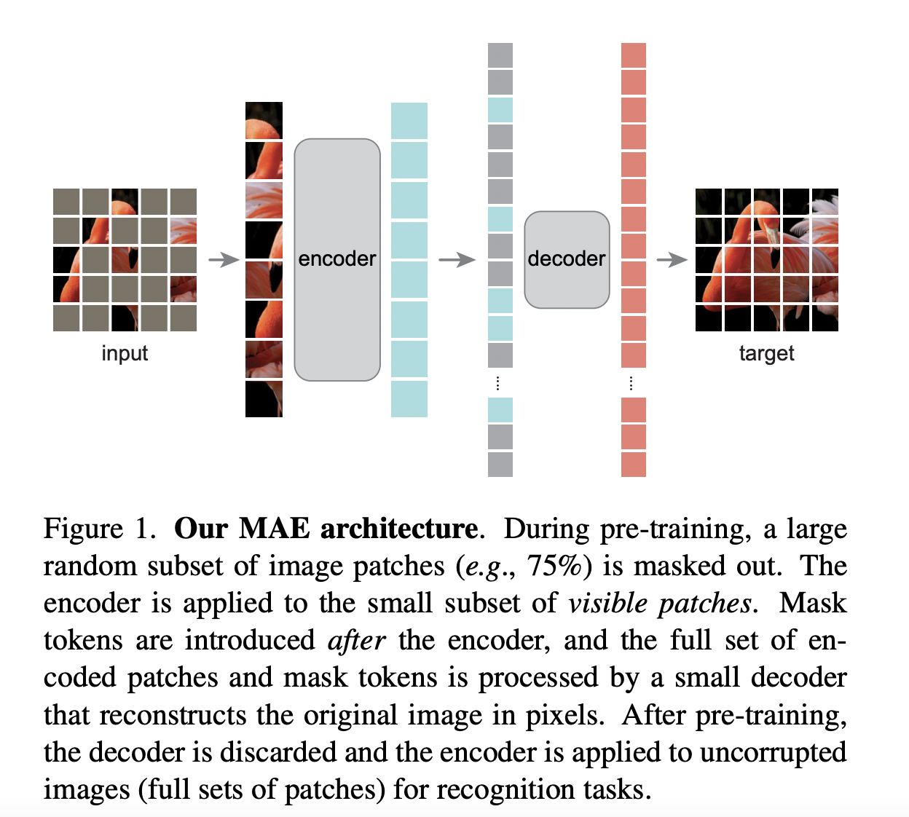
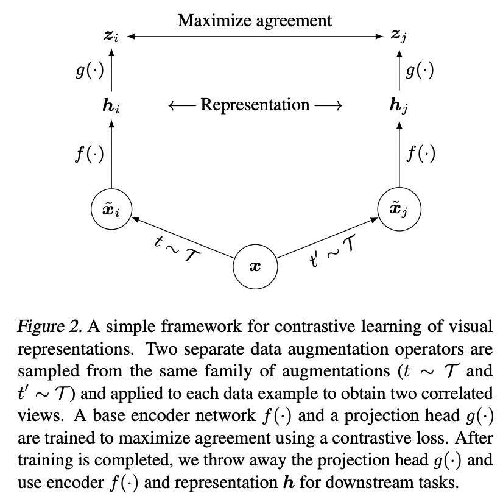
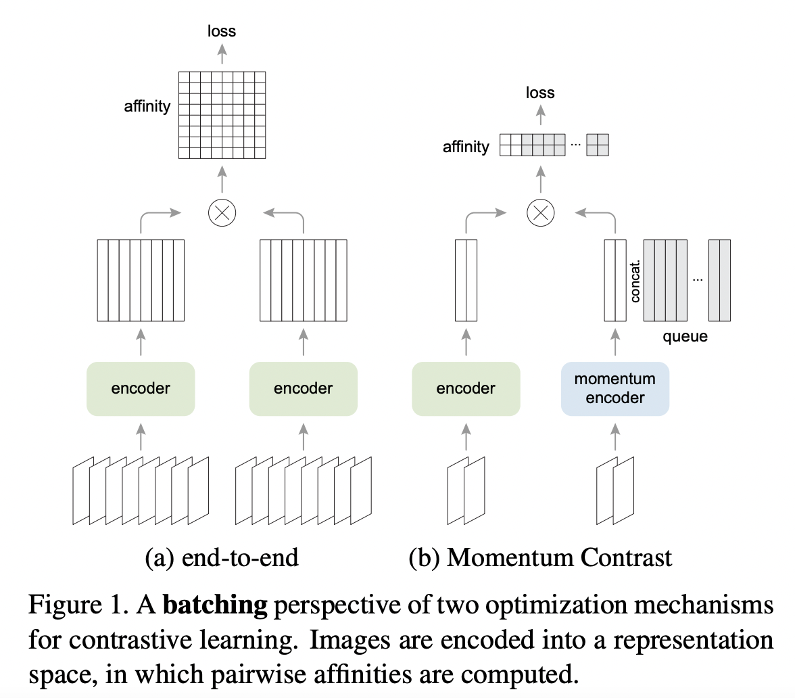
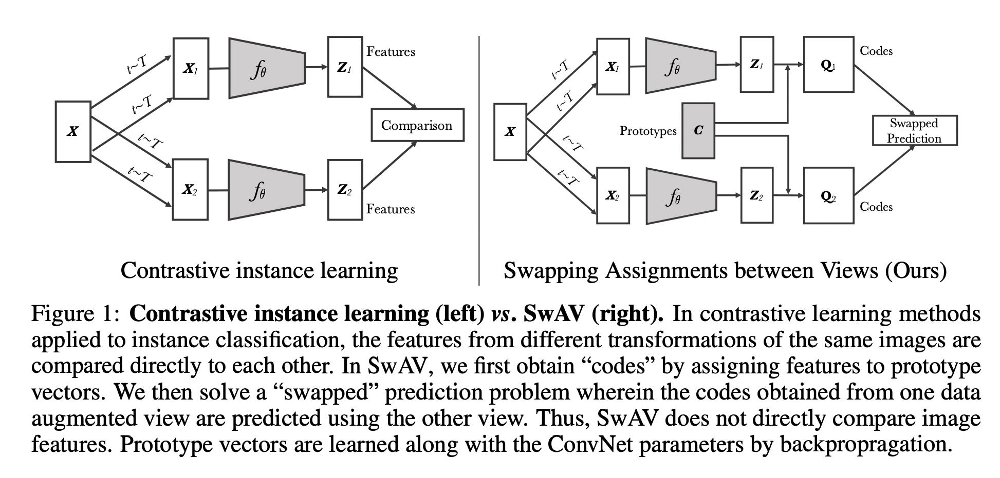
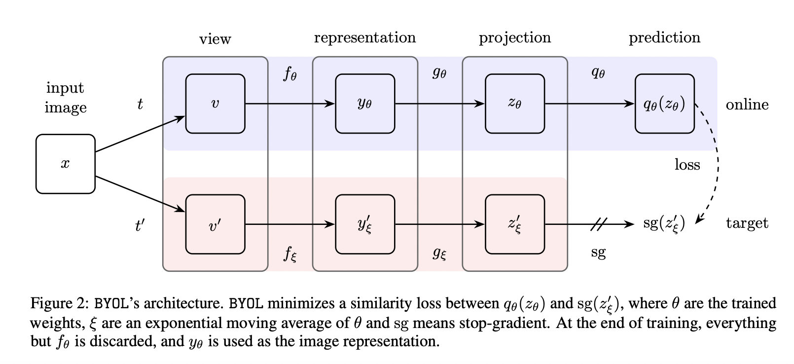
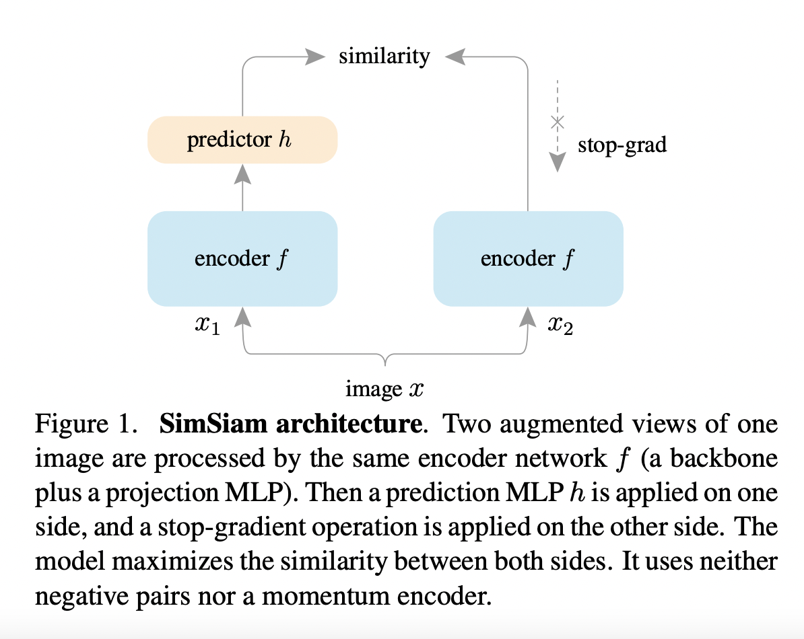

15. 自监督学习和对比学习
有监督预训练的典型问题，就是 标注数据总是有限的 ，就算 ImageNet 已经很大，但是很难更大，那么它的天花板就摆在那，就是有限的数据总量。 NLP 领域目前的经验应该是：自监督预训练使用的数据量越大，模型越复杂，那么模型能够吸收的知识越多，对下游任务效果来说越好。 这可能是自从 Bert 出现以来一再被反复证明的真理，如果它不是唯一的真理，那也肯定是最大的真理。图像领域如果技术想要有质的提升，可能也必须得走这条路，就是：充分使用越来越大量的无标注数据，使用越来越复杂的模型，采用自监督预训练模式，来从中吸取图像本身的先验知识分布，在下游任务中通过 Fine-tuning，来把预训练过程习得的知识，迁移给并提升下游任务的效果。
15.1. 自监督学习
MAE
自监督训练在 CV 领域的应用落后于 NLP，主要原因有三方面：
- CV 模型与 NLP 模型的架构不同
在 ViT 成功之前，CV 领域占主导的方法依然是 CNN。想象一下，把一张图随机遮盖掉一部分，当卷积窗口在这张图片上移动时，它会同时覆盖到遮盖和未遮盖的部分（没有独立的 Token 的概念），换而言之，它很难找到那些真正被遮盖的部分，更不要提进一步去预测它了。
- CV 模型与 NLP 模型的信息密度不一样
一句话的语义信息是丰富的，但一张图的像素信息是冗余的。 在 NLP 中，我们可能只需 Mask 掉少量的数据，就能迫使模型学到语义信息；但是在图像领域中，对一张图我们需要 Mask 掉大量的像素块，才能迫使模型不靠学插值、真正从图像语义上重建图像。
- CV 模型与 NLP 模型对 Decoder 的需求不一样
在 NLP 任务中，Encoder 负责提取的文字特征是高语义的，Decoder 负责重建的是文字，也是高语义的。 在 CV 任务中，Encoder 负责提取的图像特征是高语义的，但 Decoder 负责重建的图像却是低语义的（还原完整的一张图，势必包含很多冗余的像素信息）。 换而言之，NLP 的 Encoder-Decoder 架构设计和训练间几乎没差异（Symmetric），但 CV 的 Encoder-Decoder 却存在差异（Asymmetric） 。
基于以上观点，提出了用于 CV 自监督训练的 MAE 模型：
它是 Transformer 架构；
在训练中 Mask 掉了图片的大部分像素区域；
它有不对称的 Encoder-Decoder 结构。
架构
{kind=link}
训练流程
对原始输入图片切分 Patch ；
对 Patch 进行随机采样，采样出约 75% 比例的 Patch ，对这些 Patch 做 Mask 处理；
对非 Mask 的 Patch ，将其转变为 Emebdding ，同时添加位置编码，然后将其送入 Encoder 部分，让 Encoder 从中提取图像的高语义信息。
对于 Encoder 部分的输出，按顺序将原来 Mask 的 Patch 拼接上去，同时添加位置编码，送入 Decoder 进行训练。注意此时是用同一个可训练的 Embedding 来表示所有被 Mask 的 Patch 。
Decoder 部分将做像素级别的预测，对原始图像结果进行重建，使用 MSE Loss 计算预测像素值和真实像素值之间的误差。
训练完毕后，就可以把 Decoder 移开，拿 Encoder 部分做特征提取器，然后继续做别的下游任务了。
使用 MAE，通过图像重建任务来做预训练的最终目的是：获得一个强有力的特征提取 Encoder ，方便迁移到其他任务上（例如分类、检测）。
15.2. 对比学习
对比学习（Contrastive Learning）是自监督学习的一种，也就是说，不依赖标注数据，要从无标注图像中自己学习知识。自监督学习其实在图像领域里已经被探索了很久了，可以分为两种类型：生成式自监督学习，判别式自监督学习。 VAE 和 GAN 是生成式自监督学习的两类典型方法，它要求模型重建图像或者图像的一部分，这类型的任务难度相对比较高，要求像素级的重构，中间的图像编码必须包含很多细节信息。
对比学习则是典型的判别式自监督学习，相对生成式自监督学习，对比学习的任务难度要低一些。 目前，对比学习貌似处于“无明确定义、有指导原则”的状态，它的指导原则是： 通过自动构造相似实例和不相似实例，要求习得一个表示学习模型，通过这个模型，使得相似的实例在投影空间中比较接近，而不相似的实例在投影空间中距离比较远 。而如何构造相似实例以及不相似实例，如何构造能够遵循上述指导原则的表示学习模型结构，以及如何防止模型坍塌（Model Collapse），这几个点是其中的关键。
模型坍塌：所有的表征向量都收敛到同一个点，即模型对所有的输入都输出相同的 Embedding。
基于负例的对比学习： SimCLR
{kind=link}
- 正例
对于某张图片，在图像增强操作集合中，随机抽取两种分别作用在原始图像上，得到两张经过增强的新图像，它们互为正例。
- 负例
训练 Batch 内任意其它图像都可做为负例。
SimCLR 模型由对称的上下两个分支（Branch）构成，增强图像 \(\tilde{x}\) 先经过 Encoder \(f(\cdot)\) 得到图像表征 \(\boldsymbol{h}\) ，再经过非线性的 Projector \(g(\cdot)\) 得到 \(\boldsymbol{z}\) 。正负样本的距离是在 \(\boldsymbol{z}\) 空间优化的，而 \(\boldsymbol{h}\) 才是预训练模型希望产出的特征表达。
SimCLR 做了两次非线性映射（Encoder 和 Projector），可能是如下原因：一般的特征抽取器在做特征提取的时候，底层网络偏向抽取通用的低层特征，往往与任务无关， 通用性强 ；接近任务 Loss 的高层网络结构，更倾向编码 任务相关 的高阶特征信息。
采用 Info NCE 损失函数：
Note
对比学习在做特征表示相似性计算时，要先对表示向量做 L2 正则，之后再做点积计算，或者直接采用 Cosine 相似性。 使用去掉长度信息后的单位长度向量，能增加深度学习模型的训练稳定性。
Alignment：正例映射到单位超球面后，距离比较近。
Uniformity：表征里保留尽可能多的信息，使得映射到单位超球面的特征尽可能均匀地分布在球面上。
温度参数 \(\tau\) 的作用：会将模型更新的重点聚焦到有难度的负例（Hard Negative），并对它们做相应的惩罚，难度越大，则分配到的惩罚越多。 倾向于使用小的温度系数，但并不是越小越好，需要考虑一些 Hard Positive 的干扰。
{kind=link}
Data Augmentations
基于负例的对比学习：Batch 之外
{kind=link}
MoCo v2 的图像增强方法、Encoder、Projector、相似性计算方法以及 InfoNCE 损失函数和 SimCLR 基本一致。最主要的特点和创新在于：
MoCo v2 的下分枝模型参数更新，则采用了动量更新（Momentum Update）机制。缓慢地更新模型参数（ \(m\) 接近 1.0 ），对队列中来自不同 Batch 的实例表征编码的改变会相对稳定而统一，增加了表示空间的一致性。
MoCo v2 维护了一个较大的负例队列，当需要在正例和负例之间进行对比计算时，就从这个负例队列里取 K 个，已经不局限于 Batch Size 的限制了。
MoCo 还发现 BN 对性能是有负面影响的，可能是 BN 导致了 Batch 内各样本之间的信息泄露，使得模型发现了能够快速降低 Loss 的方法，所以提出了 Shuffle BN。
{kind=link}
MoCo 和 SimCLR 模型的演进
Note
MoCo 在测试的时候使用的是 Encoder，直接丢弃了 Momentum Encoder。
对比聚类： SwAV
{kind=link}
SwAV 维护了一些 Prototypes（聚类中心， \(\mathbf{C} \in \mathbb{R}^{D \times K}\) ），根据 Sinkhorn-Knopp 算法 （均匀地分配未标记数据点到聚类中心，建模为 Optimal Transport Distances 问题）进行 Soft Assignment，将 \(\boldsymbol{z}\) 分配到这些 Prototypes，得到一个编码 \(\boldsymbol{q}\) ， 希望正例对应的 Prototypes 也相似，优化目标为 Swapped Prediction：
非对称结构： BYOL
{kind=link}
BYOL 有两个不对称分支：Online 和 Target。Online 分支新增了一个非线性变换模块 Predictor；Target 依然采用动量更新结构。但是 BYOL 不用负例，所以并不需要维护负例队列。 优化目标要求正例的 Online 部分在表示空间中向 Target 侧靠近，也即拉近两组图像增强正例之间的距离：
BYOL 只用正例，防止模型坍塌的关键因素在于新加入的 Predictor 结构。
有 分析 指出 BYOL 的 Predictor 如果去掉 BN ，模型就无效了。
双子网络： SimSiam
{kind=link}
SimSiam 不需要负样本对、不使用 Momentum Encoder、不需要大的 Batch Size，只使用一个 Encoder ，优化正例之间的余弦相似度：
其防止模型坍塌的关键点在于 Predictor + Stop Gradient：
Predictor 的引入使得模型梯度的更新分为了前后两部分；
Stop Gradient 机制使得 Encoder 的更新比 Predictor 更慢，根据链式法则，Encoder 和 Predictor 能够保持很好的同步，因此 Encoder 能跟上 Predictor 去快速拟合目标，不至于直接塌陷。
Note
论文 How Well Do Self-Supervised Models Transfer 对 13 个知名自监督模型进行相对公平的对比测试，得出了一些很有价值的结论。
15.3. 参考资料
对比学习（Contrastive Learning）:研究进展精要
CV大模型系列之：MAE，实现像素级图像重建
Self-Supervised Learning 超详细解读 (目录)
How Well Do Self-Supervised Models Transfer?
图像自标记的可视化指南
从动力学角度看优化算法（六）：为什么SimSiam不退化？